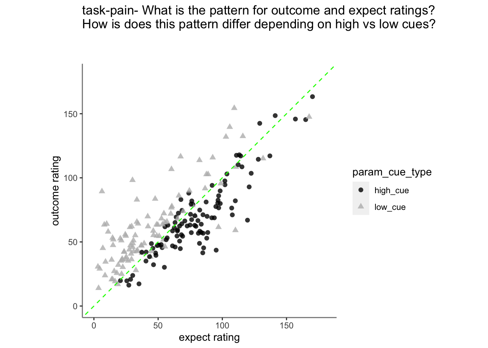
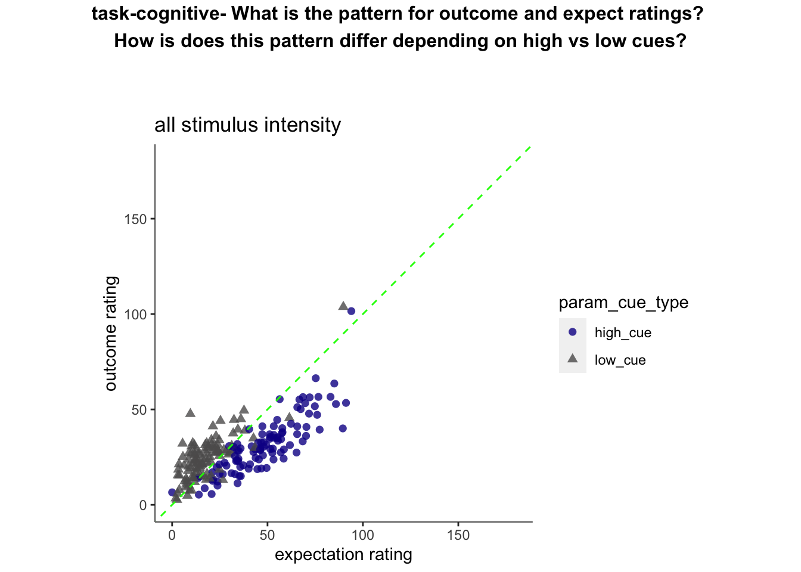
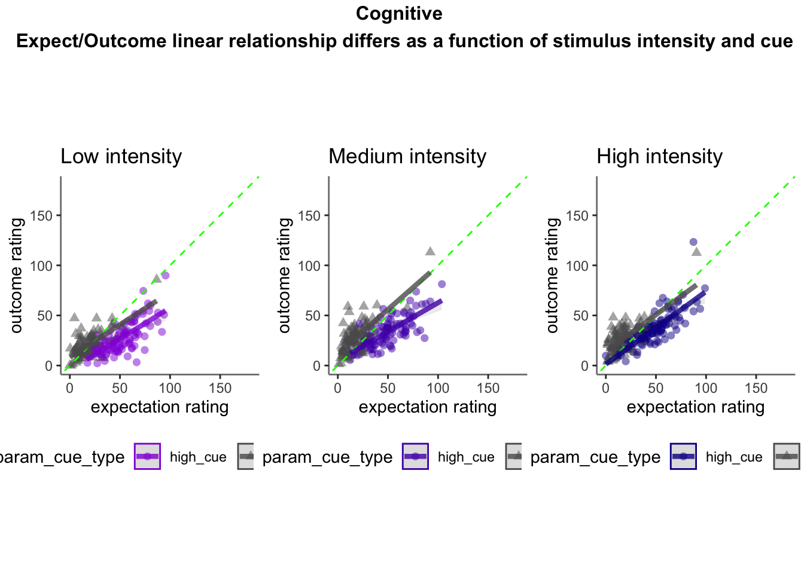
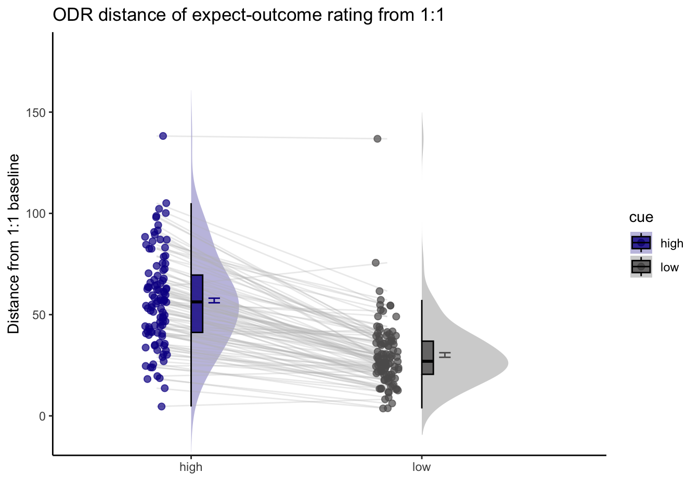

Chapter 15 [ beh ] outcome ~ cue * stim * expectrating * n-1outcomerating
What is the purpose of this notebook?
- Linear relationship between expectation and outcome ratings, as a function of stimulus intensity and cues
- Here, I model the outcome ratings as a function of cue, stimulus intensity, expectation ratings, N-1 outcome rating.
- From this, I see that the linear relationship of expectation ratings and outcome ratings are split across a 1:1 slope, depending on high or low cues. In other words, when exposed to a high cue, participants tend to rate higher on expectations but report lower outcome ratings, and viceversa for low cues. Based on these results, I ask the following:
2.Are participants who are overestimating for high cues also underestimators for low cues? * Here, I calculate Orthogonal distance from the 1:1 slope. * Based on that, I test whether the absolute ODR distance is equivalent across cues. If a participant equally overestimates for a high cue and underestimates a stimuli for a low cue, their ODR distance should be the same. This is reflected in the subject-level slopes, which are parallel.
Some thoughts, TODOs
- Standardized coefficients
- Slope difference? Intercept difference? ( cue and expectantion rating)
- Correct for the range (within participant) hypothesis:
- Larger expectation leads to prediction error
- Individual differences in ratings
- Outcome experience, based on behavioral experience What are the brain maps associated with each component.
load data and combine participant data
main_dir = dirname(dirname(getwd()))
datadir = file.path(main_dir, 'data', 'beh', 'beh02_preproc')
# parameters _____________________________________ # nolint
subject_varkey <- "src_subject_id"
iv <- "param_cue_type"
dv <- "event03_RT"
dv_keyword <- "RT"
xlab <- ""
taskname <- "pain"
ylab <- "ratings (degree)"
subject <- "subject"
exclude <- "sub-0999|sub-0001|sub-0002|sub-0003|sub-0004|sub-0005|sub-0006|sub-0007|sub-0008|sub-0009|sub-0010|sub-0011"
# load data _____________________________________
data <- load_task_social_df(datadir, taskname = taskname, subject_varkey = subject_varkey, iv = iv, exclude = exclude)
data$event03_RT <- data$event03_stimulusC_reseponseonset - data$event03_stimulus_displayonset
# data['event03_RT'], data.event03_RT - pandas
analysis_dir <- file.path(main_dir, "analysis", "mixedeffect", "model14_iv-cue-stim-N1outcome-expect_dv-outcome", as.character(Sys.Date()))
dir.create(analysis_dir, showWarnings = FALSE, recursive = TRUE)summarize data
## event02_expect_RT event04_actual_RT event02_expect_angle event04_actual_angle
## Min. :0.6504 Min. :0.0171 Min. : 0.00 Min. : 0.00
## 1st Qu.:1.6200 1st Qu.:1.9188 1st Qu.: 29.55 1st Qu.: 37.83
## Median :2.0511 Median :2.3511 Median : 57.58 Median : 60.49
## Mean :2.1337 Mean :2.4011 Mean : 61.88 Mean : 65.47
## 3rd Qu.:2.5589 3rd Qu.:2.8514 3rd Qu.: 88.61 3rd Qu.: 87.70
## Max. :3.9912 Max. :3.9930 Max. :180.00 Max. :180.00
## NA's :651 NA's :638 NA's :651 NA's :641Covariance matrix: fixation durations (e.g. ISIs)
ISIvars <- names(data) %in%
c( "ISI01_duration", "ISI02_duration", "ISI03_duration")
ISIdata <- data[ISIvars]
# numdata <- unlist(lapply(data, is.numeric), use.names = FALSE)
ISIdata_naomit <- na.omit(ISIdata)
ISIcor_matrix = cor(ISIdata_naomit)
corr_heat(ISIcor_matrix)## No FA options specified, using psych package defaults.15.1 Original motivation:
Plot pain outcome rating as a function of expectation rating and cue {.unlisted .unnumbered} 
15.2 Pain
linear model
- cue_con : high cue: 0.5, low cue: -0.5
- stim_con_linear : high intensity: 0.5, med intensity: 0, low intensity: -0.5
- stim_con_quad : high intensity: -0.33, med intensity: 0.66, low intensity: -0.33
## Linear mixed model fit by REML. t-tests use Satterthwaite's method [
## lmerModLmerTest]
## Formula:
## event04_actual_angle ~ cue_con * stim_con_linear * event02_expect_angle +
## cue_con * stim_con_quad * event02_expect_angle + lag.04outcomeangle +
## (cue_con | src_subject_id)
## Data: pvc
##
## REML criterion at convergence: 40521.4
##
## Scaled residuals:
## Min 1Q Median 3Q Max
## -5.7264 -0.5846 0.0022 0.5708 5.4135
##
## Random effects:
## Groups Name Variance Std.Dev. Corr
## src_subject_id (Intercept) 241.71 15.547
## cue_con 29.45 5.427 -0.12
## Residual 342.80 18.515
## Number of obs: 4621, groups: src_subject_id, 104
##
## Fixed effects:
## Estimate Std. Error df
## (Intercept) 32.70761 1.82870 165.11241
## cue_con -1.13761 1.55202 239.76229
## stim_con_linear 27.69729 1.42204 4422.98045
## event02_expect_angle 0.27562 0.01325 2998.11919
## stim_con_quad 0.09520 1.22851 4434.26850
## lag.04outcomeangle 0.22723 0.01141 4602.47394
## cue_con:stim_con_linear -4.74163 2.84181 4425.20529
## cue_con:event02_expect_angle -0.01895 0.01936 326.84982
## stim_con_linear:event02_expect_angle 0.08057 0.01857 4422.25132
## cue_con:stim_con_quad -2.00950 2.45638 4434.17642
## event02_expect_angle:stim_con_quad 0.04394 0.01618 4428.17824
## cue_con:stim_con_linear:event02_expect_angle 0.05843 0.03710 4433.65820
## cue_con:event02_expect_angle:stim_con_quad -0.06930 0.03236 4431.10712
## t value Pr(>|t|)
## (Intercept) 17.886 < 2e-16 ***
## cue_con -0.733 0.46428
## stim_con_linear 19.477 < 2e-16 ***
## event02_expect_angle 20.805 < 2e-16 ***
## stim_con_quad 0.077 0.93824
## lag.04outcomeangle 19.912 < 2e-16 ***
## cue_con:stim_con_linear -1.669 0.09528 .
## cue_con:event02_expect_angle -0.979 0.32854
## stim_con_linear:event02_expect_angle 4.340 1.46e-05 ***
## cue_con:stim_con_quad -0.818 0.41336
## event02_expect_angle:stim_con_quad 2.715 0.00665 **
## cue_con:stim_con_linear:event02_expect_angle 1.575 0.11531
## cue_con:event02_expect_angle:stim_con_quad -2.142 0.03227 *
## ---
## Signif. codes: 0 '***' 0.001 '**' 0.01 '*' 0.05 '.' 0.1 ' ' 1##
## Correlation matrix not shown by default, as p = 13 > 12.
## Use print(x, correlation=TRUE) or
## vcov(x) if you need it| event04_actual_angle | ||||
|---|---|---|---|---|
| Predictors | Estimates | CI | p | df |
| (Intercept) | 32.71 | 29.10 – 36.32 | <0.001 | 183.93 |
| cue con | -1.14 | -4.22 – 1.94 | 0.468 | 269.07 |
| stim con linear | 27.70 | 24.91 – 30.49 | <0.001 | 4442.42 |
| event02 expect angle | 0.28 | 0.25 – 0.30 | <0.001 | 3125.59 |
| stim con quad | 0.10 | -2.31 – 2.50 | 0.938 | 4452.36 |
| lag 04outcomeangle | 0.23 | 0.20 – 0.25 | <0.001 | 4603.45 |
| cue con * stim con linear | -4.74 | -10.31 – 0.83 | 0.095 | 4444.38 |
|
cue con * event02 expect angle |
-0.02 | -0.06 – 0.02 | 0.334 | 365.88 |
|
stim con linear * event02 expect angle |
0.08 | 0.04 – 0.12 | <0.001 | 4442.06 |
| cue con * stim con quad | -2.01 | -6.83 – 2.81 | 0.413 | 4452.31 |
|
event02 expect angle * stim con quad |
0.04 | 0.01 – 0.08 | 0.007 | 4447.17 |
|
(cue con * stim con linear) * event02 expect angle |
0.06 | -0.01 – 0.13 | 0.115 | 4452.18 |
|
(cue con * event02 expect angle) * stim con quad |
-0.07 | -0.13 – -0.01 | 0.032 | 4449.79 |
| Random Effects | ||||
| σ2 | 342.80 | |||
| τ00 src_subject_id | 241.71 | |||
| τ11 src_subject_id.cue_con | 29.45 | |||
| ρ01 src_subject_id | -0.12 | |||
| ICC | 0.42 | |||
| N src_subject_id | 104 | |||
| Observations | 4621 | |||
| Marginal R2 / Conditional R2 | 0.449 / 0.681 | |||

15.3 Vicarious
Vicarious linear model
| event04_actual_angle | ||||
|---|---|---|---|---|
| Predictors | Estimates | CI | p | df |
| (Intercept) | 18.00 | 15.89 – 20.11 | <0.001 | 212.80 |
| cue con | 1.53 | -0.93 – 3.98 | 0.223 | 4787.57 |
| stim con linear | 18.00 | 15.13 – 20.87 | <0.001 | 4705.78 |
| event02 expect angle | 0.21 | 0.17 – 0.25 | <0.001 | 4666.06 |
| stim con quad | -3.24 | -5.72 – -0.77 | 0.010 | 4702.26 |
| lag 04outcomeangle | 0.09 | 0.07 – 0.12 | <0.001 | 4783.83 |
| cue con * stim con linear | -5.09 | -10.82 – 0.65 | 0.082 | 4700.87 |
|
cue con * event02 expect angle |
-0.01 | -0.09 – 0.06 | 0.710 | 4787.17 |
|
stim con linear * event02 expect angle |
0.26 | 0.18 – 0.34 | <0.001 | 4703.32 |
| cue con * stim con quad | 0.68 | -4.27 – 5.63 | 0.787 | 4701.55 |
|
event02 expect angle * stim con quad |
-0.05 | -0.12 – 0.02 | 0.169 | 4702.61 |
|
(cue con * stim con linear) * event02 expect angle |
0.11 | -0.06 – 0.27 | 0.192 | 4703.05 |
|
(cue con * event02 expect angle) * stim con quad |
-0.05 | -0.19 – 0.09 | 0.521 | 4701.63 |
| Random Effects | ||||
| σ2 | 478.57 | |||
| τ00 src_subject_id | 67.01 | |||
| ICC | 0.12 | |||
| N src_subject_id | 104 | |||
| Observations | 4802 | |||
| Marginal R2 / Conditional R2 | 0.248 / 0.340 | |||

15.4 Cognitive
Cognitive linear model
| event04_actual_angle | ||||
|---|---|---|---|---|
| Predictors | Estimates | CI | p | df |
| (Intercept) | 16.71 | 14.56 – 18.86 | <0.001 | 203.30 |
| cue con | -0.42 | -2.58 – 1.73 | 0.699 | 4687.64 |
| stim con linear | 6.66 | 4.20 – 9.12 | <0.001 | 4618.50 |
| event02 expect angle | 0.23 | 0.20 – 0.27 | <0.001 | 4590.88 |
| stim con quad | 2.83 | 0.61 – 5.05 | 0.012 | 4612.54 |
| lag 04outcomeangle | 0.13 | 0.11 – 0.16 | <0.001 | 4704.87 |
| cue con * stim con linear | -0.14 | -5.06 – 4.77 | 0.954 | 4612.88 |
|
cue con * event02 expect angle |
0.01 | -0.05 – 0.07 | 0.822 | 4704.43 |
|
stim con linear * event02 expect angle |
0.05 | -0.01 – 0.12 | 0.117 | 4617.99 |
| cue con * stim con quad | 1.44 | -2.99 – 5.87 | 0.524 | 4612.82 |
|
event02 expect angle * stim con quad |
0.04 | -0.02 – 0.11 | 0.159 | 4619.27 |
|
(cue con * stim con linear) * event02 expect angle |
0.05 | -0.09 – 0.18 | 0.498 | 4615.10 |
|
(cue con * event02 expect angle) * stim con quad |
-0.15 | -0.28 – -0.03 | 0.014 | 4618.02 |
| Random Effects | ||||
| σ2 | 350.93 | |||
| τ00 src_subject_id | 75.24 | |||
| ICC | 0.18 | |||
| N src_subject_id | 104 | |||
| Observations | 4719 | |||
| Marginal R2 / Conditional R2 | 0.149 / 0.299 | |||
15.4.1 cognitive parameters
iv1 = "event02_expect_angle"; iv2 = "event04_actual_angle";
group = "param_cue_type"; subject = "src_subject_id";
xlab = "expectation rating"; ylab = "outcome rating"
min = 0; max = 180Cognitive run, collapsed across stimulus intensity
Warning: Warning: Removed 2 rows containing missing values (geom_line()).


ODR distance: Q. Are those overestimating for high cues also underestimators for low cues?
Note: Warning: Removed 1 rows containing non-finite values (stat_half_ydensity()).

library(plotly)
plot_ly(x=subjectwise_naomit_2dv$param_cue_type, y=subjectwise_naomit_2dv$DV1_mean_per_sub, z=subjectwise_naomit_2dv$DV2_mean_per_sub, type="scatter3d", mode="markers", color=subjectwise_naomit_2dv$param_cue_type)## Warning in RColorBrewer::brewer.pal(N, "Set2"): minimal value for n is 3, returning requested palette with 3 different levels
## Warning in RColorBrewer::brewer.pal(N, "Set2"): minimal value for n is 3, returning requested palette with 3 different levels